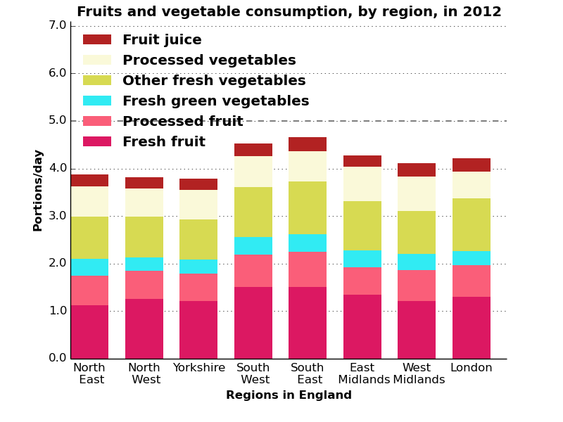

Analysis of food data
Processing and visualising food purchasing data
I analysed open government data about the amount of food consumed by different groups in the UK. This emphasised the need for health-based interventions in support of a funding bid for Cookit, a new startup.
Skills employed: Python, Excel, data cleaning, Matplotlib, project design, Linux
Portions of Fruit and veg consumed in specific UK regions.
Help with healthy food shopping
Cookit is a start up that does its customers' food shopping, automatically managing the food budget, selecting choosing healthy and sustainable ingredients and recipes that minimise food waste. Cookit has just built its service and is currently seeking funding to improve and expand, and I supported a bid.
Challenge
Cookit entered the Nesta Open Food Data challenge, with a potential prize of £40,000. They had to answer the question “How can we use open data to help people eat more healthily, eat more sustainably and/or have a more secure food chain?”
We focused on a single question, “How much of the 5 a day of fruit and vegetables is consumed by different socio-economic groups?” There is a wealth of open data on food in the UK – after searching through these different sources, I found some very clean, accessible data published as part of the Family Food Survey, which could very easily answer this question. The question itself links very closely to the ethos behind Cookit – providing affordable, easy and healthy food to anyone in the UK.
Solution
The Family Food Dataset focuses on the consumption habits of the UK population, and provided sufficient detail that I could show how much of the 5 a day is consumed. This was presented by each of; household income quintile, equivalised decile, age range of the household, the age when the person with the primary household income left school, by region in England and country in the UK.
I wrote the code to extract the data and reformulate it into the correct units and into a more accessible form. My code also plotted the data as a series of bar charts, appropriate for the type of data and readily understood by a wide audience.
Results
Although the analysis successfully answered the question we set out to, unfortunately Cookit didn't win, strongly contesting the 1st place in their heat. This near-miss has provided Cookit with a number of useful contacts and potential sources for the vital funding. They are also using this data in a whitepaper on the variation of eating habits with income across the UK, as part of obesity week.